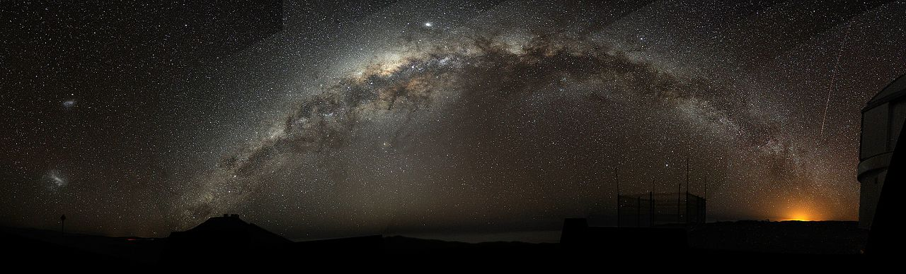
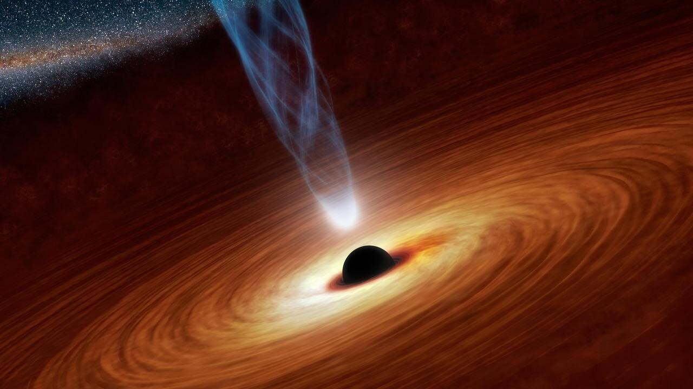

Milky Way
The Milky Way is the galaxy that contains our Solar System, with the name describing the galaxy's appearance from Earth: a hazy band of light seen in the night sky formed from stars that cannot be individually distinguished by the naked eye.The Milky Way is the galaxy that contains our Solar System, with the name describing the galaxy's appearance from Earth: a hazy band of light seen in the night sky formed from stars that cannot be individually distinguished by the naked eye.

Black hole
A black hole is a region of spacetime where gravity is so strong that nothing—no particles or even electromagnetic radiation such as light—can escape from it. The theory of general relativity predicts that a sufficiently compact mass can deform spacetime to form a black hole. The boundary of the region from which no escape is possible is called the event horizon.

Nebula
A nebula (Latin for 'cloud' or 'fog'; pl. nebulae, nebulæ or nebulas) is an interstellar cloud of dust, hydrogen, helium and other ionized gases. Originally, the term was used to describe any diffused astronomical object, including galaxies beyond the Milky Way.

Sun
The Sun is the star at the center of the Solar System. It is a nearly perfect sphere of hot plasma, with internal convective motion that generates a magnetic field via a dynamo process. It is by far the most important source of energy for life on Earth. Its diameter is about 1.39 million kilometers (864,000 miles), or 109 times that of Earth, and its mass is about 330,000 times that of Earth. It accounts for about 99.86% of the total mass of the Solar System.